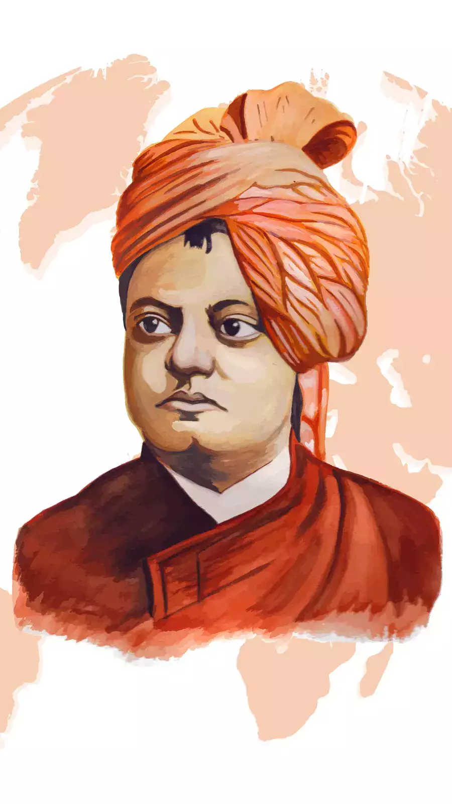

(1863-1902)
“Learn everything that is good from others, but bring it in, and in your own way adsorb it; do not become others.”
Swami Vivekananda's inspiring personality was well known both in India and in America during the last decade of the nineteenth century and the first decade The Swami's mission was both national and international. A lover of mankind, he strove to promote peace and human brotherhood on the spiritual foundation of the Vedantic Oneness of existence. A mystic of the highest order, Vivekananda had a direct and intuitive experience of Reality.of the twentieth.